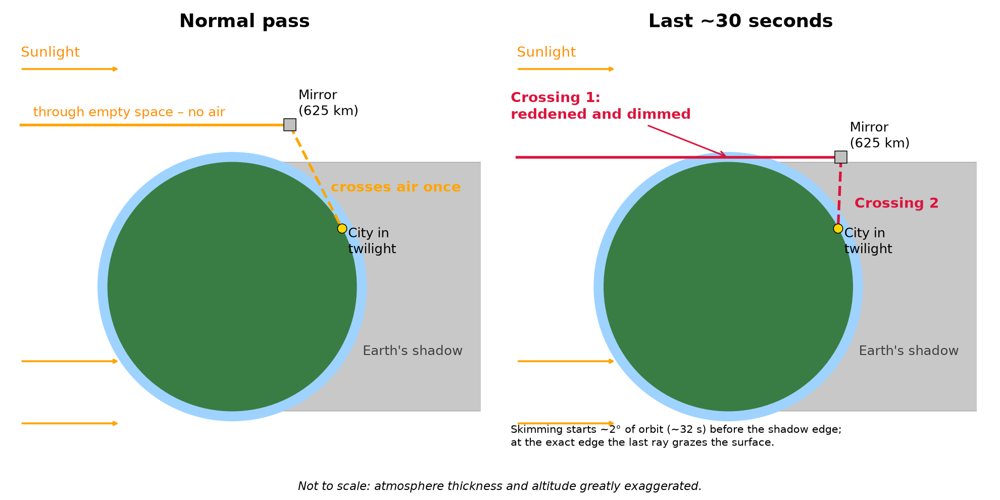

01Why a mirror can be sunlit above a dark city
Sunlight comes from one side, and Earth casts a shadow straight behind it, as wide as the Earth. On the ground, the Sun sets at the sunset line (the terminator). A mirror up is higher than the curve of the Earth, so it keeps seeing the Sun for a while after the ground beneath it has gone dark.
It stays sunlit until cos θ = R / (R + h) = 6371 / , which gives θ = past the sunset line, measured at Earth's centre. On the ground that is into the night. Earth turns 15° per hour, so the ground under the shadow edge had its sunset about earlier (at the equator at equinox, longer at high latitude).
02How fast it goes dark
The mirror moves at and circles Earth in . In an orbit that heads into the night (scene 1), it crosses those in , then spends in the shadow. That is the whole sunlit-over-dark-ground window for that pass. A second, equal window comes before sunrise on the other side.
The mirror's own sunset is very fast (scene 2). The Sun's disc slips behind Earth's edge in about . The reddened, dimming phase, while the incoming sunlight skims the atmosphere, lasts about . A sunset seen from the ground at the equator takes about two minutes.
03One mirror lights one city for minutes
Being sunlit is not enough. The mirror must also be reasonably high in the city's sky, otherwise the beam is long, spread out and dimmed by the air. At , a mirror is more than 30° above a city's horizon for at most per pass, and more than 20° up for . This is the real bottleneck, whatever the orbit.
Reflector proposals therefore favour a dawn–dusk sun-synchronous orbit (about 98° inclination, scene 3). Its plane turns with the Sun through the year, so it stays over the day–night line and the mirrors are almost never in shadow (only a short eclipse season around one solstice). Cities turn underneath at dusk and again at dawn.
Even there, each mirror passes a city in minutes, so continuous light needs a train of mirrors (scene 4, and the slider under the 3D view). For a city at 32.7° N with mirrors at least 30° up:
- One mirror: a single flash of about .
- One train of 30 in one orbit: of light in total, with gaps, before the city turns away from that orbit.
- Four trains (120 mirrors), orbits 5° apart into the evening: .
- Eight trains (240 mirrors): light until after sunset, close to the geometric limit of . After that, more mirrors add brightness, not time.
04"Through the atmosphere twice"
In normal operation the light crosses the atmosphere once, on its way down to the city. A mirror over the sunset line receives sunlight that passes hundreds of kilometres above the ground, in vacuum. If the mirror is low in the city's sky, that single downward path is long and slanted, so the light arrives weaker and redder.
The light passes through air twice only at the very end: during the last ~2° before the mirror enters the shadow, the incoming rays skim the atmosphere (just before mirror B in the figure). That lasts about . The beam then turns red and fades, like a sunset seen twice over, and then it is gone. Scene 2 shows it, with the height at which the incoming ray passes the Earth.

05How bright is it?
A flat mirror cannot focus. Each point of the Sun's 0.53° disc makes its own reflected image, so the beam spreads with distance. From straight up the spot is across, and at 45° elevation about , stretched along the ground.
One × mirror (, 90% reflective, turning the beam by 90°) puts about on the ground directly below. That is about full Moon. At 45° elevation it gives , about full Moon.
A target of 50 W/m² (about 5% of noon sunlight) needs about mirrors all directly overhead and aimed at the same spot, or about at 45° elevation. Because each mirror is in range for only minutes, the fleet in orbit has to be many times larger again.
The simulation puts a number on that. At any moment only about of the fleet is within reach of one city. A steady 50 W/m² for the whole evening therefore needs about mirrors in orbit. Street-light brightness (about 10 lux) needs about .